Table des matières
Liste des tableaux
Liste des exemples
Table des matières
Lorsque que j'ai commencé à développer ContestOrg en 2009, mon objectif était de générer un site Web dans le cadre d'un concours de robotique pour que les participants puissent accéder à leurs résultats en ligne. Au cours du développement, ContestOrg est devenu petit à petit une application plus ou moins complète d'organisation de concours. Quelques mois suivant la version finale de ContestOrg 1, j'ai décidé de le mettre en ligne sans trop d'espoir que celui-ci rencontre un certain succès.
A ma grande surprise, ContestOrg a vite trouvé ses utilisateurs. L'idée de développer une deuxième version de l'application s'est rapidement transformé en nécessité à la vue des différents retours des utilisateurs. En plus de mes notes personnelles, tous ces retours, qu'ils soient positifs ou négatifs, ont été d'une grande aide pour l'établissement du cahier des charges de cette deuxième version. C'est ainsi que j'ai commencé le développement de ContestOrg 2 à la fin de l'été 2010. Désireux de livrer une application complète, la date de sortie a subi de nombreux reports. Après de longs mois d'effort, la nouvelle version voit enfin le jour au printemps 2011.
Au delà du service rendu à ses utilisateurs, j'ai voulu faire de ContestOrg un logiciel libre. L'objectif recherché est de créer une communauté où chacun peut apporter sa pierre à l'édifice : signalement d'erreurs, proposition d'améliorations, développement de fonctionnalités, aide aux utilisateurs, rédaction de documentation... L'application ne pourra que s'en porter mieux. En tant qu'initiateur du projet, j'aurais toujours mon mot à dire dans les grandes lignes mais je ne serais en aucun cas amené à verrouiller le projet. ContestOrg doit devenir un projet vivant de par sa communauté.
Différentes valeurs venant du monde libre sont portés par le projet :
partage : libre échange de la connaissance
passion : amour du travail bien fait
ouverture : pas de barrières entre utilisateurs et contributeurs
liberté : accès aux sources
autonomie : appartenance à la communauté et non à une quelconque entité
Se lancer dans un tel projet n'est pas chose aisée et je me plaît à dire que si j'avais su à l'avance le travail que cela aurait engendré, je ne me serais pas lancé dans l'aventure. Ainsi, je tiens à remercier les personnes qui m'ont soutenus et qui me soutiennent encore : ma fiancée Gaëlle, mes deux frères Luke et Allan, ma soeur Céline et mes deux parents Etienne et Pascale. J'en profite pour remercier également tous utilisateurs qui m'ont envoyé leurs réactions ainsi que tous les développeurs qui sont à l'origine des librairies que l'application réutilise.
ContestOrg est une application visant à organiser n'importe quel type de tournois. Celle-ci a été pensée et développée de manière générique, c'est à dire qu'aucune spécificité lié à un type de tournois en particulier n'est présente. Ainsi, les usages que l'on peut avoir de ContestOrg différent selon des besoins des utilisateurs.
Il y a trois grandes parties dans ContestOrg :
Équipes : création/importation des équipes, répartition au sein des catégories/poules.
Phases qualificatives : gestion des matchs à caractère non éliminatoire au sein des poules.
Phases éliminatoires : gestion des matchs à caractère éliminatoire au sein des catégories.
A ces trois grandes parties viennent se greffer différents utilitaires :
Exportations : permettent d'obtenir des fichiers tirés des données du tournois
Diffusions : permettent d'afficher sur des écrans distants des informations du tournois
ContestOrg est également doté de modules externes :
Inscription des équipes : permet l'inscription d'équipes au sein d'un site Web
Dans ce document, nous verrons en détail l'ensemble des fonctionnalités proposées par l'application. Si vous ne trouvez pas les informations que vous cherchez dans ce document, vous pouvez nous contacter en utilisant : le forum ou le formulaire de contact.
ContestOrg est une application développée en Java. Celle-ci a donc besoin de la machine virtuelle Java ainsi que les bibliothèques standards Java pour fonctionner. Il faut donc s'assurer que l'environnement d'exécution Java soit bien installé sur votre ordinateur. Suivez la procédure d'installation en fonction de votre système d'exploitation pour être en mesure de pouvoir lancer ContestOrg.
Pour lancer l'application sous Windows, il vous faut double cliquer
sur ContestOrg.exe. Sous Linux et Mac OS, il vous
faut lancer le terminal et exécuter la ligne suivante : $ java
-jar ContestOrg.jar.
Table des matières
Lorsque vous lancez ContestOrg, nous pouvons observer sur la gauche une barre latérale composée de différents boutons. Cette barre latérale est divisée en trois zones : une zone de création/chargement de tournois, une zone dédiée au tournois courant et une zone dédiée à l'application.
| 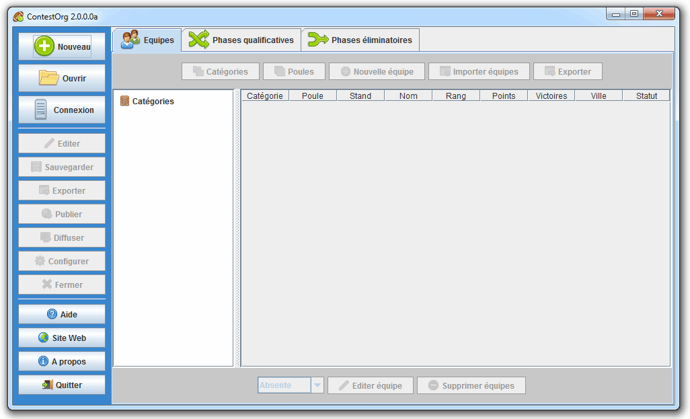 |
Description des boutons de la barre de menus :
: créer un nouveau tournois
: ouvrir un fichier de tournois
: se connecter à un serveur (pas encore disponible)
: prendre le jeton d'édition (pas encore disponible)
: afficher la fenêtre des exportations
: lancer l'exportation définie pour la publication
: afficher la fenêtre des diffusions
: configurer le tournois
: fermer le tournois
: afficher l'aide PDF
: afficher le site Web de ContestOrg
: afficher les crédits
: quitter l'application
Sur la zone de droite, nous retrouvons les trois grandes parties de l'application (équipes, phases qualificatives et phases éliminatoires) disponibles sous la forme d'onglets. Chacune de ces trois parties est divisée en quatre zones : une zone dédiée à l'arborescence catégories/poules, une zone dédiée aux données de l'onglet courant, une zone dédiée aux actions sur l'arborescence, une zone dédiée aux actions sur les données. Notez que la zone dédiée aux données de l'onglet courant dépendent de la sélection effectuée dans l'arborescence.
Pour ouvrir un concours, cliquez sur le bouton puis sélectionnez le fichier de concours désiré. L'extension choisie est « .co » reprenant les initiales de ContestOrg.
Concernant le format de fichier contenant les données du concours,
il s'agit d'un fichier XML respectant la
DTD fournie dans le fichier
dtds/concours.dtd au sein du répertoire de
ContestOrg. La DTD est également disponible sur le
site Web de ContestOrg à l'adresse
http://www.elfangels.fr/contestorg/data/dtds/concours.dtd.
Dans la barre latérale de gauche, cliquez sur ou pour lancer la fenêtre de création/configuration du tournois.
Dans cet onglet, nous retrouvons la configuration générale du tournois, à savoir : les informations du tournois, les informations de l'organisme et le type de participant. Le type de participant permet de définir si ce sont des équipes ou des joueurs qui participent au tournois.
| 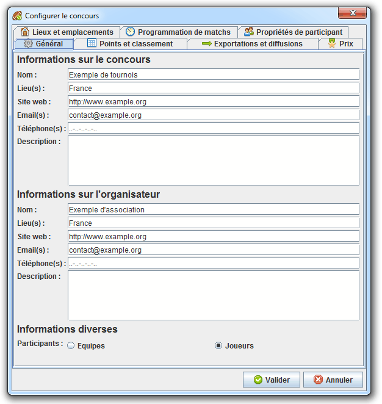 |
Exemple 4.1. Exemple d'utilisation du choix du type de participants
Au football, il s'agira d'un tournois d'équipes, au judo, il s'agira d'un tournois de joueurs.
| 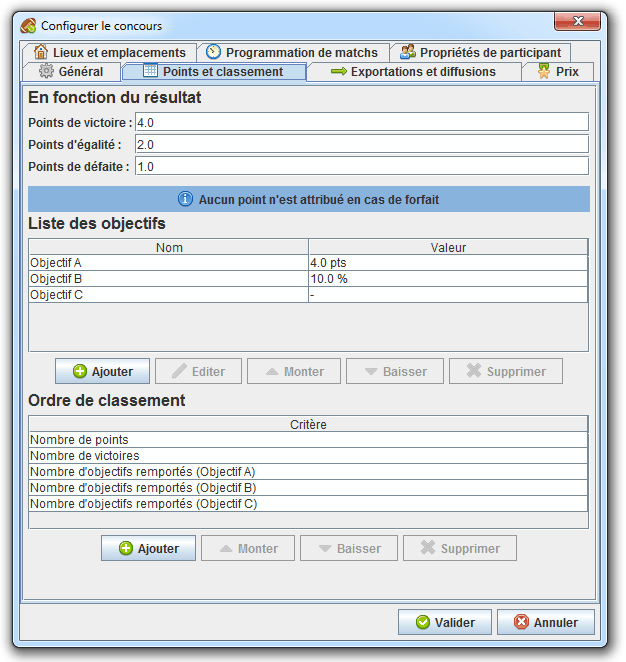 |
Cette zone permet de spécifier le nombre de points remportés en cas de victoire, d'égalité ou de défaite. Il n'y a aucun point de remporté si l'équipe est déclaré forfait au match. Si votre tournois n'attribue aucun points en fonction du résultat d'un match, spécifiez « 0 » dans chacun des entrées.
Cette zone permet de spécifier la liste des objectifs qu'une équipe peut remporter au cours d'un match. Trois types d'objectifs sont disponibles : les objectifs à points, les objectifs à pourcentage et les objectifs nuls. Notez que l'ordre des objectifs importe dans l'attribution des points.
Ce type d'objectif rapporte un certain nombre de points à l'équipe le remporte. Il est possible de définir une borne de participation que le nombre de points remportés au cours du match ne pourra par dépasser. Notez qu'il est possible de spécifier un nombre de points négatif (pour les pénalités par exemple), il en va de même pour la borne de participation.
// Calcul des points remportés via un objectif à points
PROCEDURE OBJECTIF_POINTS (
points_participation,
points_objectif,
borne_participation
)
DEBUT PROCEDURE
// Incrémenter les points de la participation du nombre de points de l'objectif
points_participation = points_participation + points_objectif;
// Vérifier si les points de la participation a dépassé la borne de participation
SI
DEFINI(borne_score) ET (
(points_objectif < 0 ET points_participation < borne_participation)
OU
(points_objectif > 0 ET points_participation > borne_participation)
)
ALORS
points_participation = borne_participation;
FIN SI;
// Retourner les points de la participation
RETOURNER points_participation;
FIN PROCEDURE;| 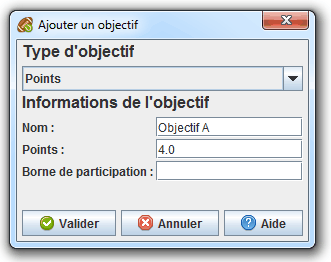 |
Exemple 4.2. Exemple de mise en place d'un objectif à points
Dans le cadre d'un tournois de judo, le responsable de l'organisation du tournois a définit 4 objectifs à points :
Koka : 3 points
Yuko : 5 points
Wazari : 7 points
Ippon : 10 points
Lorsqu'un joueur remporte un de ces objectifs, son score est crédité du nombre de points associé à l'objectif remporté.
Ce type d'objectif rapporte à l'équipe qui le remporte un certain pourcentage du nombre de points gagnés au cours du match. Il est possible de définir une borne d'augmentation que l'augmentation du nombre du points remportés au cours du match ne pourra pas dépasser. Il est possible de définir une borne de participation que le nombre de points gagnés au cours du match ne pourra par dépasser. Notez qu'il est possible de spécifier un pourcentage négatif (pour les pénalités par exemple), il en va de même pour les bornes d'augmentation et de participation.
// Calcul des points remportés via un objectif à pourcentage
PROCEDURE OBJECTIF_POURCENTAGE (
points_participation,
pourcentage_objectif,
borne_augmentation,
borne_participation
)
DEBUT PROCEDURE
// Calculer l'augmentation du nombre de points de la participation
VAR augmentation = points_participation * pourcentage_objectif;
// Vérifier si l'augmentation n'a pas dépassé la borne d'augmentation
SI
DEFINI(borne_augmentation) ET (
(pourcentage_objectif < 0 ET augmentation < borne_augmentation)
OU
(pourcentage_objectif > 0 ET augmentation > borne_augmentation)
)
ALORS
augmentation = borne_augmentation;
FIN SI;
// Incrémenter les points de la participation de l'augmentation
points_participation = points_participation + augmentation;
// Vérifier si les points de la participation n'a pas dépassé la borne de participation
SI
DEFINI(borne_score_objectif) ET (
(pourcentage_objectif < 0 ET points_participation < borne_participation)
OU
(pourcentage_objectif > 0 ET points_participation > borne_participation)
)
ALORS
points_participation = borne_participation;
FIN SI;
// Retourner les points de la participation
RETOURNER points_participation;
FIN PROCEDURE;| 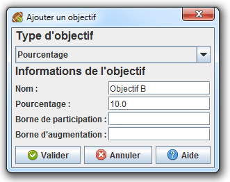 |
Exemple 4.3. Exemple de mise en place d'un objectif à pourcentage
Dans le cadre d'un tournois de robotique, le responsable de l'organisation du tournois à définit une pénalité à pourcentage :
Pénalité : -15%, borne de score : 0 points
Lorsqu'une équipe reçoit cette pénalité, son nombre de points remportés au cours du match est diminué de 15%. Si ce nombre de points devient négatif, celui-ci est ramené à zéro.
Dans cet onglet, nous retrouvons la configuration des lieux et emplacements dédiés aux matchs du tournois. Un lieu est une collection d'horaires et d'emplacements. Les horaires permettent de déterminer à quelle heures les lieux sont disponibles les matchs. Les emplacements permettent de déterminer à quels endroits il est possible d'effectuer un match.
| 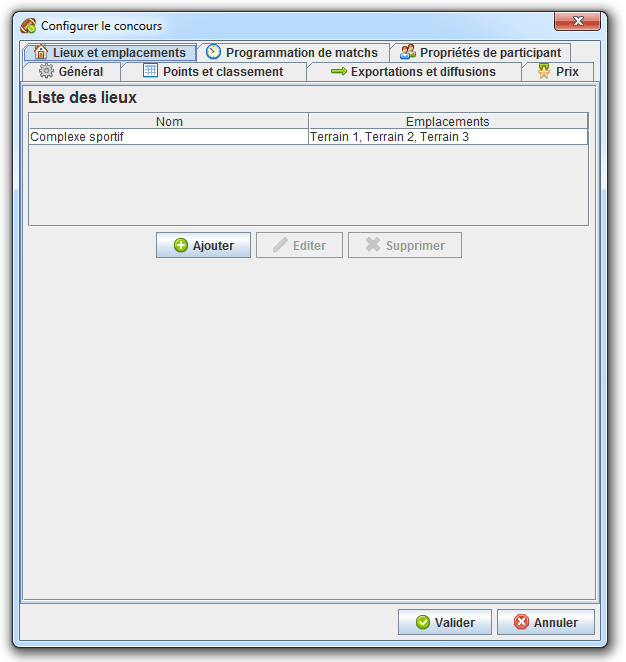 |
Cliquez sur le bouton ou pour créer/editer un lieu. Un lieu doit comprendre au moins un emplacement.
| 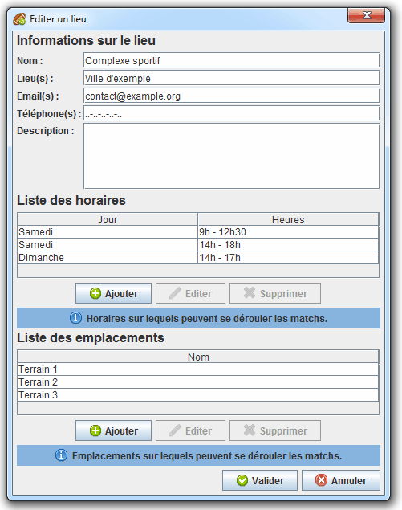 |
Cliquez sur le bouton ou de la zone Horaires pour créer/éditer un horaire. Dans la fenêtre de création/édition d'horaire, il est possible de sélectionner plusieurs jours en maintenant la touche CTRL enfoncée.
| 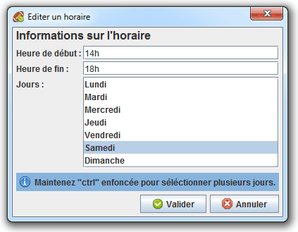 |
Cliquez sur le bouton ou de la zone Emplacements pour créer/éditer un emplacement.
| 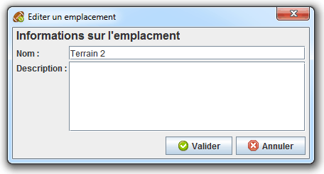 |
Exemple 4.4. Exemple d'utilisation des lieux, horaires et emplacements
Dans le cadre d'un tournois de rugby, le responsable de l'organisation du tournois désire fournir sur le site Web les informations sur le lieu où se déroule le tournois. Pour cela, il ajout le lieu « Complexe sportif ». Celui-ci possède les horaires « Samedi de 9h à 12h », « Samedi de 14h à 18h » et « Dimanche de 15h à 18h » ainsi que les emplacements « Terrain 1 », « Terrain 2 » et « Terrain 3 ».
Rendez-vous dans l'onglet "Exportations et diffusions" pour configurer la publication des données sur un site Web.
Dans cet onglet, nous retrouvons la configuration des prix que peuvent recevoir les équipes.
| 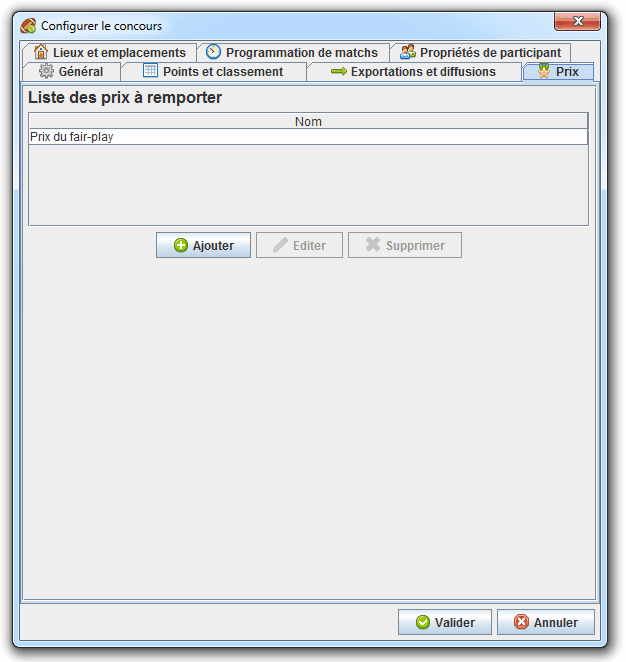 |
Dans cet onglet, nous retrouvons la configuration des informations de programmation des matchs telles que : la durée d'un match, la durée de pause minimale d'une équipe entre chaque match et la durée minimale qui sépare chaque match sur un même emplacement.
| 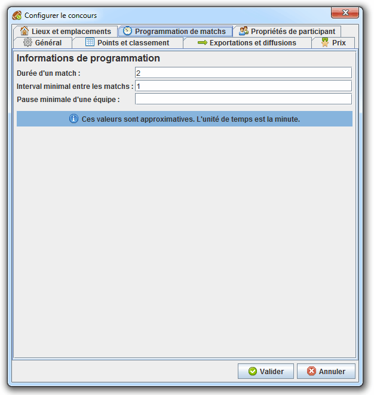 |
Dans cet onglet, nous retrouvons la configuration des participants d'équipe. L'objectif est de pouvoir palier au manque de propriétés proposées par défaut lors de la création d'un participant. Une propriété possède trois paramètres : son nom, son type (nombre entier, nombre décimal et texte) et s'il s'agit d'une propriété obligatoire.
| 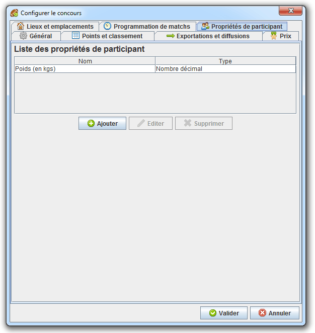 |
Exemple 4.5. Exemple d'utilisation des propriétés d'équipe
Dans le cadre d'un tournois de judo, le responsable de l'organisation du tournois désire pouvoir renseigner le poids de chaque participant. Pour cela, il crée une propriété d'équipe « Poids » de type « Nombre réel ». Ainsi, à la création d'un participant, son poids est demandé.
| 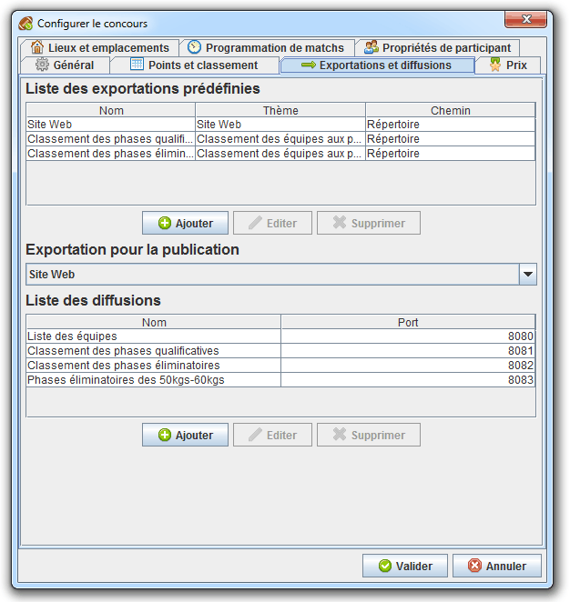 |
Cette zone permet de spécifier une liste d'exportations prédéfinies disponibles depuis la fenêtre des exportations. L'intérêt est de pouvoir définir à l'avance les exportations que vous serez amener à utiliser au cours du tournois.
Exemple 4.6. Exemple d'utilisation des exportations prédéfinies
Dans le cadre d'un tournois quelconque, le responsable d'organisation désire informer les participants, visiteurs et journalistes des informations relative au tournois. Pour cela, il crée l'exportation ayant pour thème « Site Web » et pour emplacement « Serveur FTP ». Après avoir renseigné les informations nécessaires, il valide le formulaire et spécifie la nouvelle exportation comme étant la publication. Il ne lui reste plus qu'à cliquer sur le bouton pour générer le site Web et l'envoyer sur le serveur FTP.
Pour obtenir un serveur FTP, il vous faut souscrire à une offre d'hébergement : OVH, Gandi, Infomaniak...
Pour ajouter/éditer une exportation, cliquez sur le bouton ou . Nous pouvons observer dans la fenêtre de création/édition d'exportation trois zones : la zone Informations de l'exportation concernant informations propres à l'exportation, la zone Thème concernant les données à exporter et la zone Chemin concernant l'emplacement de destination. Pour un chemin de type « Serveur FTP », il vous est possible de tester si la connexion FTP s'établit correctement en cliquez sur le bouton . Ce test comprend : la connexion au serveur FTP, l'identification avec les identifiants fournis, l'envoi d'un fichier de test dans le répertoire de destination indiqué, la suppression de ce fichier et la déconnexion du serveur FTP.
| 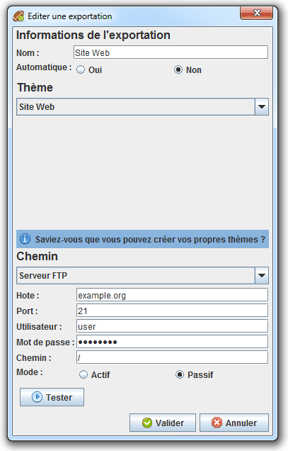 |
Rendez-vous dans le chapitre Thèmes des exportations et des diffusions pour se documenter sur la création et l'édition de thèmes.
Cette zone permet de spécifier quelle exportation sera lancée lors de l'appel au bouton dans la fenêtre.
Cette zone permet de spécifier la liste des diffusions disponibles depuis la fenêtre des diffusions. L'intérêt est de pouvoir diffuser des informations du tournois mises à jour en temps réel sur des écrans distants. Tous les thèmes de base permettent le défilement automatique si jamais la hauteur de l'écran ne permet pas d'afficher toutes les données d'un coup.
Pour pouvoir diffuser des informations sur des écrans distants, il faut que les ordinateurs reliés à ces écrans et l'ordinateur qui héberge ContestOrg doivent être connectés sur le même réseau.
Exemple 4.7. Exemple d'utilisation des diffusions
Dans le cadre d'un tournois quelconque, le responsable
d'organisation désire afficher sur plusieurs écrans dispersés à
travers tout le lieu du tournois le classement actuel des équipes.
Pour cela il crée une diffusion ayant pour port
« 8080 » et pour thème « Classement des équipes
aux phases qualificatives ». Il se rend ensuite dans la
fenêtre des diffusions, puis
démarre la diffusion qu'il vient de créer. Muni de son
IP, il se rend sur les différents ordinateurs
reliés aux différents écrans, ouvrir un navigateur et rentre dans
la barre d'URL : http://IP:8080/.
Sur les écrans s'affiche le classement actuel des équipes.
Pour ajouter/éditer une édition, cliquez sur le bouton Ajouter ou Éditer. Nous pouvons observer dans la fenêtre de création/édition de diffusion deux zones : la zone Informations de la diffusion concernant les informations propres à la diffusion et la zone Thème concernant les données à diffuser. Il vous est possible de tester la diffusion en cliquant sur le bouton . Ce test comprend : le démarrage d'un serveur HTTP sur le port indiqué, la mise à disponibilité d'un fichier de test via le serveur HTTP, la requête HTTP pour récupérer le contenu du fichier de test et l'arrêt du serveur HTTP.
| 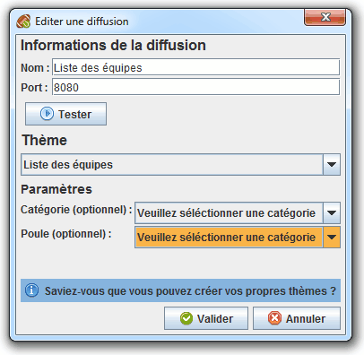 |
Rendez-vous dans le chapitre Thèmes des exportations et des diffusions pour se documenter sur la création et l'édition de thèmes.
Dans cette fenêtre, nous avons le bandeau du haut et le bandeau du bas de disponibles. Dans le bandeau du haut, nous retrouvons les boutons , , , et . Dans le bandeau du bas, nous retrouvons les boutons et ainsi qu'une liste déroulante permettant de changer le statut d'une ou plusieurs équipes. Sur la zone dédiée aux données, nous retrouvons la liste des équipes de la sélection courante.
Pour l'utilisation du bouton , rendez-vous dans le chapitre Exportations à la volée.
| 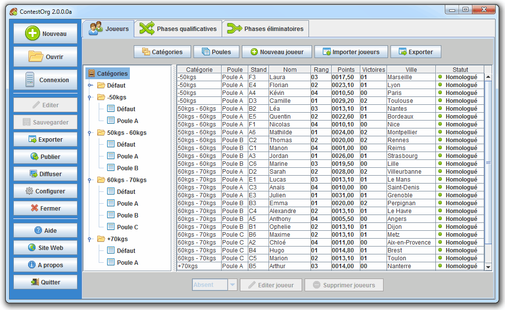 |
Pour gérer les catégories, cliquez sur le bouton . Dans cette fenêtre, nous retrouvons la liste des catégories que nous pouvons modifier avec les boutons , , , et . Les catégories définissent des groupes d'équipes qui ne pourront pas jouer ensemble.
Notez qu'aucune opération ne peut être effectué sur la catégorie « Défaut ». Il s'agit d'une catégorie neutre dans laquelle pourront être placées les équipes qui ne sont pas encore affectées à une catégorie. Cette catégorie peut également servir de catégorie unique si votre tournois de comprend pas de catégorie.
| 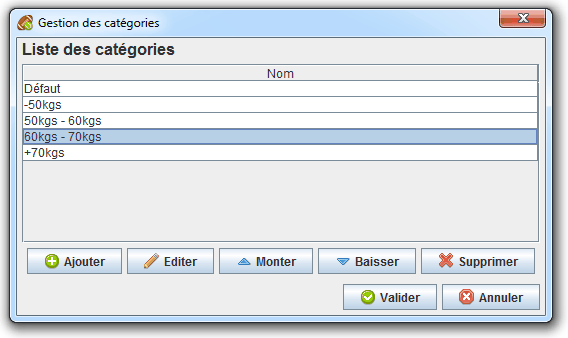 |
Exemple 4.8. Exemple de catégories
Dans le cadre d'un tournois de judo, le responsable de l'organisation du tournois doit mettre en place différentes catégories de joueurs qui ne joueront pas ensemble. Pour cela, il crée différentes catégories : « -50kgs », « 50-60kgs », « 60-70kgs », « +70kgs ».
Pour gérer les poules, cliquez sur le bouton . Dans cette fenêtre, nous retrouvons deux zones : la zone Catégorie dédiée au choix de la catégorie (optionnel), la zone Création des poules dédiée à la création des poules et la zone Affectation des équipes dédiée à l'affectation des équipes au sein des poules.
| 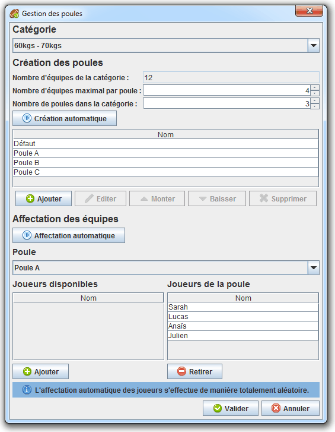 |
Cette zone permet de créer des poules manuellement ou automatiquement. Pour ajouter/éditer une poule manuellement, cliquez sur le bouton ou . Pour créer automatiquement les poules, indiquez le nombre de poules désiré ou bien le nombre maximal d'équipes au sein d'une poule. Ces deux champs sont fortement liés, c'est pourquoi si vous modifier l'un, l'autre est impacté. Cliquez ensuite sur le bouton .
Notez qu'aucune opération ne peut être effectué sur la poule « Défaut ». Il s'agit d'une poule neutre dans laquelle pourront être placées les équipes qui ne sont pas encore affectées à une poule. Cette poule peut également servir de poule unique si votre tournois de comprend pas de poule.
Cette zone permet d'affecter manuellement ou automatiquement les équipes aux poules précédemment créées.
Pour affecter manuellement une ou plusieurs équipes à une poule, sélectionner la poule de destination dans la liste des poules, sélectionnez les équipes que vous désirez affecter à la poule dans la liste des équipes disponibles puis cliquez sur le bouton . Pour retirer une ou plusieurs équipes d'une poule, sélectionnez les équipes dans la liste des équipes de la poule puis cliquez sur le bouton .
Pour affecter automatiquement les équipes aux poules, cliquez sur le bouton . Notez que l'affectation des équipes se fait de manière aléatoire.
Ajouter ajouter/éditer une équipe, cliquez sur le bouton ou . Pour éditer une équipe, vous pouvez également effectuer un double-clic sur la ligne dans la liste des équipes. Dans la fenêtre de création/édition, nous retrouvons plusieurs zones : la zone Catégorie et poule concernant le choix de la catégorie et de la poule de destination (optionnel), la zone Informations de l'équipe concernant les informations propres à l'équipe, la zone Propriétés personnalisées concernant les propriétés personnalisées (optionnel) et la zone Prix concernant les prix remportés (optionnel). Pour sélectionner plusieurs prix, sélectionner les prix en maintenant la touche CTRL enfoncée. Notez qu'une équipe doit avoir le statut homologuée pour pouvoir participer à un match.
Rendez-vous dans l'onglet "Propriétés d'équipe" de la fenêtre Configurer le concours pour éditer la liste des propriétés personnalisées. Rendez-vous dans l'onglet "Prix" de la fenêtre Configurer le concours pour éditer la liste des prix à remporter.
| 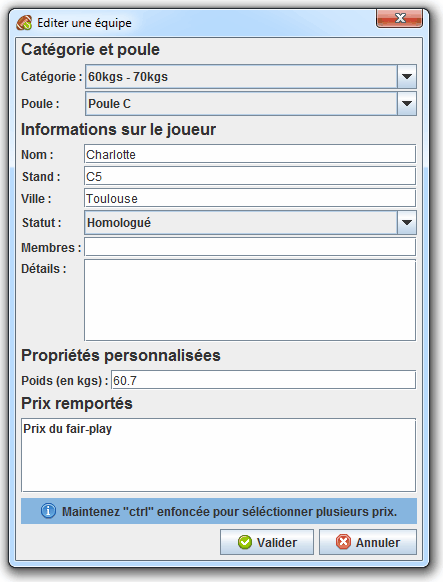 |
Pour importer une liste d'équipes, cliquez sur le bouton . Dans la fenêtre d'importation d'équipes nous retrouvons trois zones : la zone Catégorie et poule dédiée au choix de la catégorie et de la poule de destination (optionnel), la zone Choix du fichier dédiée au choix du fichier contenant la liste des équipes et la zone Équipes trouvées dédiée à la liste des équipes trouvées dans le fichier spécifié. Notez que dans la liste des équipes trouvées, vous pouvez déselectionner les équipes que vous ne désirez pas importer.
Concernant le format de fichier contenant la liste des équipes,
il s'agit d'un fichier XML respectant la
DTD fournie dans le fichier
dtds/import-equipes.dtd au sein du répertoire de
ContestOrg. La DTD est également disponible sur le
site Web de ContestOrg à l'adresse
http://www.elfangels.fr/contestorg/data/dtds/import-equipes.dtd.
Rendez-vous au module externe Inscription des équipes du chapitre Modules externes pour mettre en place un site Web permettant l'inscription des équipes et fournissant un fichier XML à importer dans ContestOrg.
| 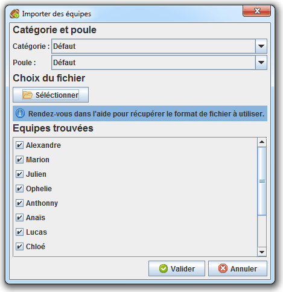 |
Dans cette fenêtre, nous avons le bandeau du haut et le bandeau du bas de disponibles. Dans le bandeau du haut, nous retrouvons les boutons , , , et . Dans le bandeau du bas, nous retrouvons les boutons et . Sur la zone dédiée aux données, nous retrouvons la liste des matchs de la sélection courante.
Pour l'utilisation du bouton , rendez-vous dans le chapitre Exportations à la volée.
| 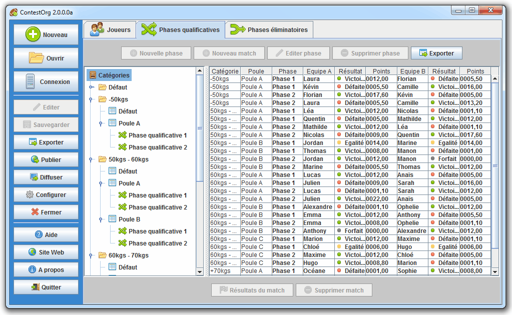 |
Pour créer/éditer une phase qualificative, cliquez sur le bouton ou . Lors de la création d'une phase qualificative, pensez à sélectionner la poule de destination au préalable. Dans la fenêtre de création de phase qualificative, nous retrouvons trois zones : la zone Paramètres de la génération dédiée aux paramètres utilisés pour la génération, la zone Avancement de la génération dédiée à l'exécution de la génération et la zone Meilleure configuration trouvée dédiée à retourner les informations de la meilleure configuration trouvée.
ContestOrg, quelque soit le mode de génération utilisé, prend en compte trois critères pour trouver la meilleure configuration :
Est-ce que les équipes ont déjà joué ensemble ?
Est-ce que les équipes sont de même niveau ?
Est-ce que les équipes viennent de la même ville ?
| 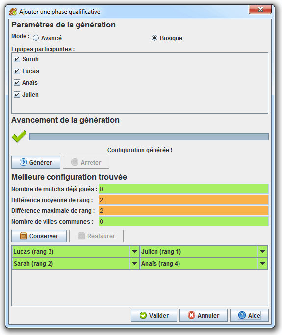 |
Cette zone permet de configurer la génération. Deux paramètres sont disponibles : le mode de génération utilisée et la liste des équipes participantes.
Le mode avancé teste l'ensemble des configurations possibles. Dès que l'algorithme remonte une meilleure configuration que celle précédemment trouvée, celle-ci apparaît dans le cadre Meilleure configuration trouvée. Au delà de 8 équipes, le temps de génération devient exponentiellement long. Vous pouvez arrêter la génération à tout moment et considérer la meilleure configuration trouvée jusque là.
Le mode basique est bien moins gourmand en ressource que le mode avancé. Il génère tous les couples d'équipes possibles et les trie en fonction de l'affinité des équipes que les composent. L'algorithme choisit ensuite des couples compatibles en retrouvés en haut de classement. Celui ci peut parfois donner de bon résultats mais il ne s'agit pas forcement de la meilleure configuration.
Cette zone permet de lancer/arrêter la génération. Pour lancer la génération de la configuration, cliquez sur le bouton . Pour arrêter la génération, cliquez sur le bouton . La barre de progression indique l'avancement de la génération. Au cours de la génération, la zone Meilleure configuration trouvée est mise à jour en temps réelle.
Cette zone permet de restituer la meilleure configurer trouvée ainsi que plusieurs indicateurs qui s'y rattachent. En plus cela, elle permet également de configurer manuellement la phase qualificative. Notez l'importance des couleurs : le rouge pour un problème, l'orange pour un avertissement et le vert pour signaler qu'aucun problème n'est détecté. Cette zone possède deux boutons qui peuvent s'avérer pratique : les boutons et . Le bouton permet d'enregistrer en mémoire la configuration courante. Le bouton permet de restaurer la configuration enregistrée en mémoire précédemment.
Pour créer/éditer un match, cliquez sur le bouton ou . Lors de la création d'un match, pensez à sélectionner la phase qualificative de destination au préalable. Pour éditer un match, vous pouvez également effectuer un double-clic sur la ligne dans la liste des matchs. Dans la fenêtre de création/édition de match, nous retrouvons quatre zones : la zone Équipes concernant le choix des deux équipes participantes, la zone Résultats concernant les résultats des deux équipes, la zone Objectifs remportés concernant la liste des objectifs remportés par les deux équipes (optionnel) et la zone Détails concernant d'éventuels commentaires sur le match.
| 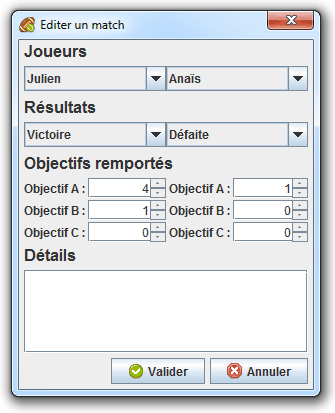 |
Rendez-vous dans l'onglet "Points et classement" de la fenêtre Configurer le concours pour éditer la liste des objectifs à remporter au cours d'un match.
Dans cette fenêtre, nous avons uniquement le bandeau du haut de disponible. Dans cet unique bandeau, nous retrouvons les boutons , et . Nous retrouvons également une liste déroulante dans laquelle nous pouvons spécifier le nombre d'équipes participantes lors de la génération. Dans la zone dédiée aux données, nous retrouvons un diagramme interactif représentatif des phases éliminatoires de la catégorie sélectionnée.
Pour l'utilisation du bouton , rendez-vous dans le chapitre Exportations à la volée.
| 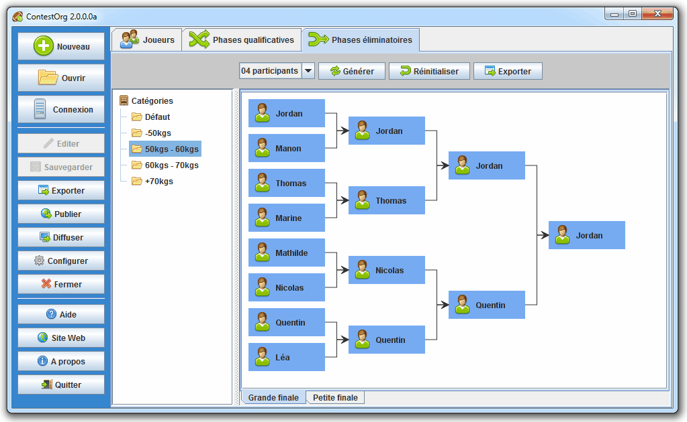 |
Pour créer les phases éliminatoires, sélectionnez la catégorie dans laquelle vous désirez générer les phases éliminatoires, sélectionnez le nombre d'équipes participantes puis cliquez sur le bouton . Pour réinitialiser les phases éliminatoires d'un catégorie, sélectionnez cette dernière puis cliquez sur le bouton . Si vous désirez modifier manuellement une équipe, cliquez sur la case bleue associée à l'équipe puis sélectionnez l'équipe de votre choix dans la liste qui apparaît. Si le match qui suit est renseigné, il n'est plus possible d'éditer cette équipe.
Lors de la génération des phases éliminatoires, ContestOrg n'effectue par un tirage au sort. Il prend en compte le rang des équipes aux phases qualificatives lors de sa génération. C'est à dire que l'algorithme de génération crée les matchs de manière à ce que si chaque équipe gagne face à une équipe de rang inférieur, celle-ci obtient le même rang obtenu lors des phases qualificatives. Imaginez que l'équipe de premier et de deuxième rang se rencontrent dès le début des phases éliminatoires, ceci n'aurait pas de sens.
| 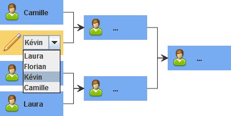 |
Pour renseigner les résultats d'un match, cliquez sur la case bleue associée au match. Dans la fenêtre d'édition du match, nous retrouvons quatre zones : la zone Équipes concernant les deux équipes participantes, la zone Résultats concernant les résultats des deux équipes, la zone Objectifs remportés concernant la liste des objectifs remportés par les deux équipes (optionnel) et la zone Détails concernant d'éventuels commentaires sur le match. Cette fenêtre est identique la fenêtre d'édition d'un match d'une phase qualificative à la différence près que le choix des équipes participantes n'est pas possible car les deux équipes affichées correspondent aux équipes vainqueurs du match précédant. Si le match suivant est renseigné, il n'est plus possible de modifier les résultats car de nouveaux résultats seraient pas conformes avec les équipes participantes à celui-ci.
| 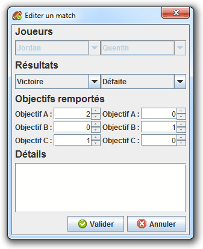 |
Pour lancer une exportation prédéfinie, cliquez sur le bouton situé sur la barre lattérale sur la gauche de la Fenêtre principale. Dans la fenêtre d'exportation, nous retrouvons la liste des exportations prédéfinies. Pour lancer une exportation, cliquez sur le bouton .
Rendez-vous dans l'onglet "Exportations et diffusions" de la fenêtre Configurer le concours pour éditer la liste des exportations prédéfinies.
| 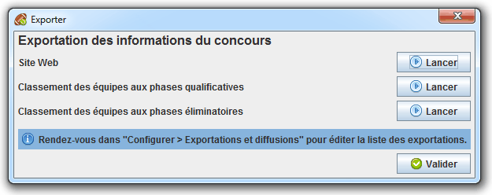 |
Vous n'avez pas besoin de défininr à l'avance une exportation pour la lancer. Pour cela, rendez-vous dans l'onglet de votre choix (Equipes, Phases qualificatives ou Phases éliminatoires) puis cliquez sur le bouton . Les exportations affichées concernent l'onglet courant. Choisissez le thème de votre choix, renseignez les différents paramètres puis cliquez sur le bouton . Il vous sera alors demander l'emplacement de destination.
| 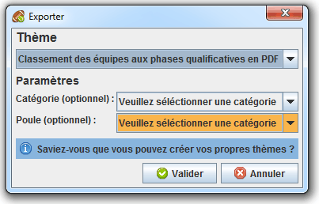 |
Pour démarrer une diffusion, cliquez sur le bouton situé sur la barre lattérale sur la gauche de la Fenêtre principale. Dans la fenêtre de diffusion, nous retrouvons la liste des diffusions. Pour démarrer une diffusion, cliquez sur le bouton . Si une diffusion est active, le voyant associé est vert. Si une diffusion n'est pas active, le voyant associé est rouge. Pour arrêter une diffusion, cliquez sur le bouton . Pour afficher le résultat de la diffusion dans votre navigateur, cliquez sur le bouton . Notez que si une diffusion active est modifiée, celle-ci est automatiquement arrêté.
Rendez-vous dans l'onglet "Exportations et diffusions" de la fenêtre Configurer le concours pour éditer la liste des diffusions.
| 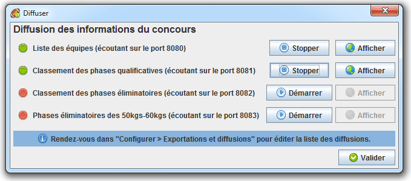 |
La possibilité de personnaliser entièrement les thèmes des
exportations et des diffusions est l'une des forces de
ContestOrg. Les thèmes des exportations sont
présents dans le répertoire themes/exportations et
ceux des diffusions dans le répertoire
themes/diffusions.
Pour mieux comprendre la construction d'un thème, n'hésitez pas à prendre exemple sur les thèmes déjà existants.
Un thème doit comporter obligatoirement un fichier de
configuration intitulé configuration.xml.
Celui-ci est écrit en XML et sa
DTD est disponible dans le fichier
dtds/theme.dtd ou à l'adresse
http://www.elfangels.fr/contestorg/data/dtds/theme.dtd.
Nous retrouvons dans ce fichier de configuration la liste des fichiers
à fournir dans l'exportation ou la diffusion ainsi que la liste des
paramètres à demander à l'utilisateur.
Les différents fichiers définis dans le fichier de configuration
peuvent subir une transformation. La transformation est effectuée via
la technologie XSLT. Il vous suffit d'éditer une
feuille XSL et de l'associer dans le fichier de
configuration à une transformation. Référez-vous à la
DTD des données XML que vos
feuilles XSL auront à transformer dans le fichier
dtds/concours.dtd ou à l'adresse
http://www.elfangels.fr/contestorg/data/dtds/concours.dtd.
Les paramètres demandés à l'utilisateur seront passés à vos feuilles
XSL.
ContestOrg dispose d'un outil d'importation d'équipes. Celui
permet d'extraire des équipes depuis un fichier XML
dont la DTD est fournie dans le fichier
dtds/import-equipes.dtd et disponible à l'adresse
http://www.elfangels.fr/contestorg/data/dtds/import-equipes.dtd.
Vous pouvez créer votre propre fichier à l'aide de cette
DTD ou bien utiliser le module externe
« Inscription des équipes » disponible dans le répertoire
modules/inscription/. Il s'agit d'un fichier
PHP à mettre à disposition de vos participants via
un serveur Web. Celui-ci permettra à vos futurs participants de
s'inscrire facilement et à vous de récupérer le fichier
XML à importer au sein de
ContestOrg.
Table des matières
Organiser un évènement sportif, c'est partager un moment conviviale et rencontrer de nouveaux sportifs. Mais avant d'organiser quoi que ce soit, il est bon de définir le cadre de l'évènement ainsi que ses objectifs en répondant aux questions suivantes :
A qui s'adresse le tournois ?
Quand aura lieu le tournois ? Quelle durée ?
Quelle équipe d'organisation ?
Quel budget ? Des sponsors ? Des aides ?
Quels infrastructures ? Quels moyens ?
Combien de participants ? De visiteurs ?
Comment promouvoir l'évenement ?
Suite à ces interrogations, nous allons détailler certains points importants.
Pour un tournois sportif, vous aurez besoin de salles de sport et de matériel. Il vous faudra donc obtenir des autorisations selon le lieu de votre événement. Vous choisir des créneaux horaires disponibles pour effectuer votre tournois et vous assurer de disposer de suffisemment de temps pour mettre en place les différents dispositifs et remettre dans l'état la salle après le tournois.
Pour la demande d'autorisation, effectuez la le plus tôt possible, au moins un ou deux mois avant l'événement ce qui vous laissera le temps de préparer le tournois et de communiquer aux participants et visiteurs les diverses informations sur le où et le quand de l'évenement.
Comme tous les événements sportifs, votre tournois doit être couvert par une assurance. Les assurances sportives sont spécifiques car vos participants doivent être couverts individuellement.
Un tournois sportif est un événement comme les autres, il faut mener une bonne campagne de communication auprès de potentiels visiteurs et participants. Pensez à commencer votre campagne assez tôt et à l'adapter avec la date limite des inscriptions. Plusieurs voies s'offrent à vous : des tracts, des encarts dans les journaux locaux, site web...
Pour mener à bien votre événement, il faut une bonne équipe d'organisation composée de :
encadrants pour les participants
arbitres pour les matchs
comptabilisateurs des scores
organisateurs des matchs
N'hésitez pas à prévenir les pompiers, la croix rouge ou la médecine préventive pour soigner les petits bobos ou pour prodiguer des conseils d'échauffement avant les matchs.
Certains diront qu'un tournoi sans buvette n'est pas un bon tournoi... Sachez que la loi Evin interdit tout débit à proximité de pratiques sportives. Optez donc pour les jus de fruits et autres boissons non alcoolisées.
Pour assurer une bonne ambiance durant tout l'événement, vous pouvez prévoir des animations dans les gradins pour les supporters. Pour cela, prévoyez du matériel (draps, marqueurs, papiers, agraphes...) et organisez le concours du plus beau drapeau de supporters, le concours de la mascotte... Pensez également à un présentateur et un disc jockey. Faites en sorte que le spectacle soit aussi dans les tribunes !
Un bon tournois se termine toujours par une remise des prix : une coupe ou des cadeaux données par vos partneaires pour les équipes en haut du podium. Il est également possible d'attribuer des prix spéciaux pour les équipes portant des valeurs notables telles que le fair-play. Pensez à faire quelques photos de la remise des prix. Dans le discours final, n'oubliez surtout pas de remercier vos partenaires, votre équipe d'organisation et les participants.
Table des matières
L'équipe de ContestOrg n'est pas fermée. Elle est prête à accueillir tout nouvel arrivant désireux d'apporter sa contribution au projet. Quelque soit ses compétences, il pourra trouver un rôle adapté. Une chose est malgré tout requise : la motivation.
Liste des rôles :
Développeur : développe des fonctionnalités
Testeur : remonter des erreurs
Rédacteur : rédige de la documentation
Accompagnateur : aide les utilisateurs
Pour rejoindre l'équipe, contactez-nous en n'oubliant pas d'inclure vos motivations et vos compétences pour le(s) rôle(s) que vous désirez remplir.
Pas besoin de s'engager pour contribuer au projet. Il est tout à faire possible de contribuer occasionnellement. Il suffit de nous contacter pour signaler des erreurs ou proposer des améliorations.
Table des matières
Tableau 7.3. Liste des contributeurs occasionnels
| Prénom/Nom | Tâche effectuée |
|---|---|
| Gaëlle Bély | Voix de la présentation vidéo |
Tableau 7.4. Liste des packs d'icônes utilisés
| Nom | Page Web | Licence |
|---|---|---|
| Farm | Cliquez-ici | Creative Commons Attribution 3.0 |
Tableau 7.5. Liste des outils utilisés
| Nom | Description | Page Web |
|---|---|---|
| Eclipse | Environnement de développement intégré | Cliquez-ici |
| Sourceforge | Plateforme de développement collaboratif | Cliquez-ici |
| Cacoo | Outil de réalisation de diagrammes en ligne | Cliquez-ici |
| DocBook | Langage à destination de documentation technique | Cliquez-ici |
| Pencil | Logiciel de maquettes d'interfaces graphiques | Cliquez-ici |
| Launch4j | Encapsuleur EXE pour JAR à destination de Windows | Cliquez-ici |
| XMLMind | Editeur XML prenant en charge la DTD DocBook | Cliquez-ici |
Tableau 7.6. Liste des librairies utilisées
| Nom | Description | Page Web | Licence |
|---|---|---|---|
| jGraph | Réalisation de graphes | Cliquez-ici | BSD |
| jDom | Manipulation du DOM XML | Cliquez-ici | ~Apache License |
| jUnit | Réalisation de tests unitaires | Cliquez-ici | Common Public License 1.0 |
| FOP | Processeur FOP | Cliquez-ici | Apache License |
| HttpComponents | Création d'un serveur et de requêtes HTTP | Cliquez-ici | Apache License |
| Commons Net | Réalisation de requêtes FTP... | Cliquez-ici | Apache License |
| Log4J | Persistance de traces d'éxecution | Cliquez-ici | Apache License |
| Saxon | Processeur XSLT autonome | Cliquez-ici | Mozilla Public License 1.0 |
Tableau 7.7. Sources utilisés
| Contenu | Page Web |
|---|---|
| Chapitre "Guide d'organisation un tournois sportif" | Le Pongiste avec l'autorisation de l'auteur |